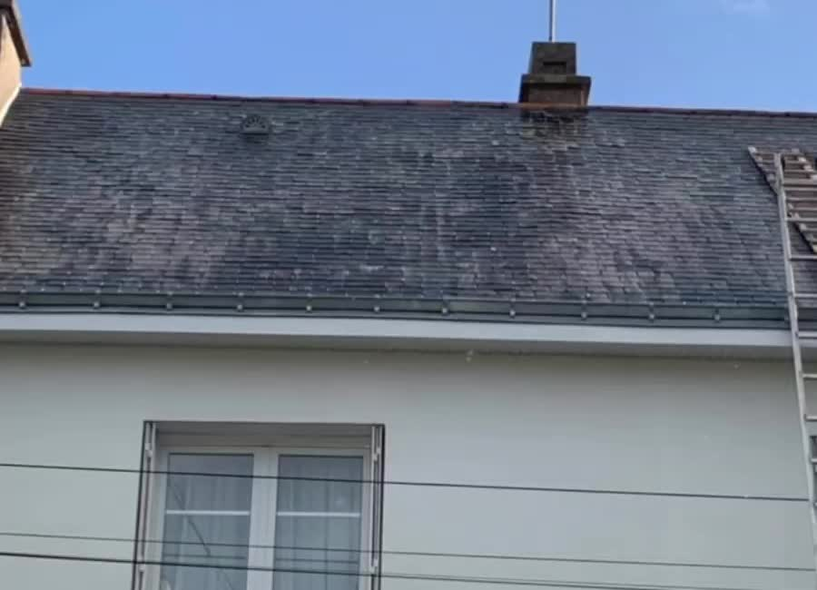
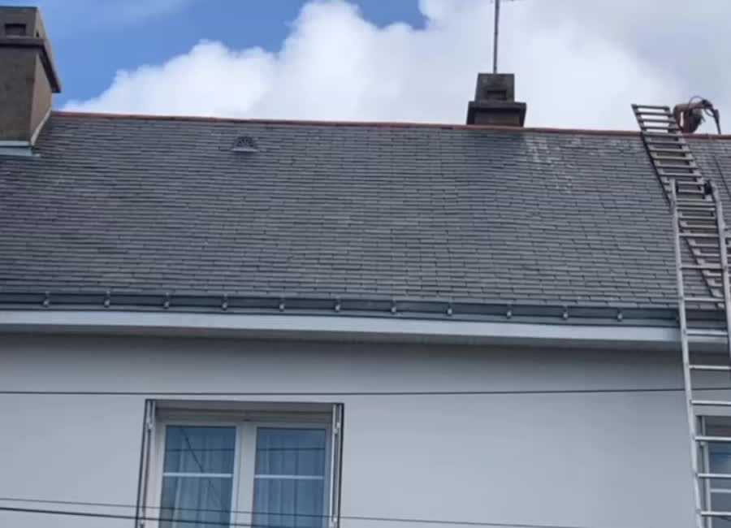

Artisan à Saint-Joachim · Loire-Atlantique
L’expert de l’entretien
de votre couverture
Nettoyage et entretien de toiture à Saint-Joachim et alentours. Échangez directement avec Frédéric pour étudier votre chantier et recevoir un devis adapté.
Du lundi au vendredi, de 8h30 à 18h30. Vous préférez écrire ? Envoyez un SMS.
Un chantier réalisé par Frédéric
Votre toiture, un résultat visible.
Deux vues du même chantier, extraites de notre vidéo de nettoyage. L’état de chaque couverture détermine la méthode et le résultat possibles.


Notre engagement
Un travail artisanal,
un résultat visible.
Chaque toiture est différente. Avant toute intervention, nous observons son état, son matériau et son accessibilité afin de proposer la solution réellement adaptée.
Vous gardez un interlocuteur unique, du premier rendez-vous jusqu’à la présentation du résultat en fin de chantier.
Nos prestations principales
Entretenir aujourd’hui.
Protéger pour demain.
L’expert de l’entretien de votre couverture
Une intervention simple, claire et maîtrisée.
- 01
Visite du chantier
Nous vérifions la surface, le support, l’accès et vos besoins.
- 02
Devis adapté
Vous recevez une proposition claire selon la faisabilité réelle.
- 03
Intervention soignée
Le chantier est réalisé avec le matériel et la méthode appropriés.
- 04
Résultat présenté
Nous vous montrons les photos avant/après à la fin des travaux.
Parlons de votre toiture
Un projet d’entretien
ou de rénovation ?
Décrivez-nous votre besoin. Nous vous recontactons pour étudier votre chantier et convenir d’une visite.
Demander un devis